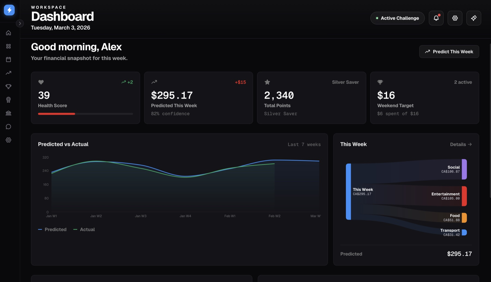

Mountain Madness, SFU CSSS & RBC — March 2026
See Tomorrow, Save Today, Share Success. An AI-powered personal finance dashboard that predicts upcoming spending from calendar events — analyzing upcoming events (meals, outings, transport), predicting likely spend by category, and surfacing insights, savings challenges, and an AI coach.

Calendar-driven financial awareness is often missing: people see their week's spend only after it happens. FutureSpend addresses this by turning a calendar into a spending forecast — built at Mountain Madness 2026, held March 1 and sponsored in part by SFU CSSS and RBC. Rather than a single fixed theme, teams chose from several open tracks and competed within smaller, focused categories; the team's track was RBC-aligned financial tooling.
The system analyzes upcoming events (dining, social, transport, entertainment), predicts likely spend by category using a rules-based pipeline, and surfaces insights and recommended actions — e.g. trim one event to stay under budget. Target users are individuals and teams who want a lightweight, calendar-first view of upcoming expenses.
Extending this project further would mean building a native mobile application and revisiting the visual design for something more distinctive under less time pressure.
Two-tier setup: frontend (Next.js 14 with static export for GitHub Pages) and backend (FastAPI + uvicorn on Render), talking to each other via a configured API URL. Calendar events (mock or Google) are parsed into features, run through a prediction pipeline for category-based spend, then feed the dashboard, insights, challenges, and optional Gemini-powered AI coach. Banking and leaderboard endpoints support the demo experience.
Owned the backend pipeline under the 24-hour deadline: calendar events flow through a feature-extraction layer into a rule-based prediction engine, chosen over ML for reliability with zero labelled training data. Also designed and documented the API contract for the team (endpoint specs, request/response shapes, examples) so teammates could build the frontend independently, and built the integration layer connecting the Next.js frontend to the backend, wiring 5 pages from static mocks to live API calls with a graceful mock-data fallback — backed by a 277-line automated test suite covering the full request flow.